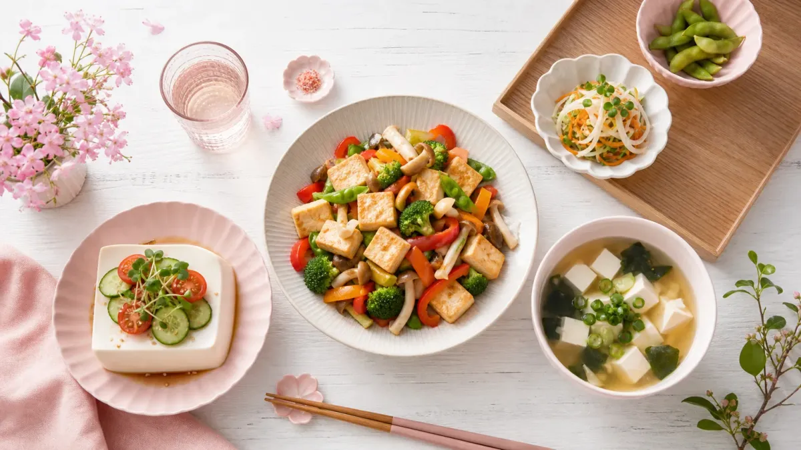

豆腐ダイエットレシピ、どれを選べばいい？
「豆腐がダイエットに良いのはわかってるけど、毎日同じ食べ方に飽きてしまう…」そんな悩みを持つ方に向けて、この記事では1食200〜350kcal以下で作れる豆腐レシピを7つ厳選しました。
調理時間は最短5分〜15分。忙しい日でも続けやすいメニューを、具体的な材料・手順つきで紹介します。
なぜ豆腐はダイエットに向いているの？
豆腐（木綿・絹ごし）は100gあたり約56〜72kcalと低カロリーながら、植物性たんぱく質・カルシウム・イソフラボンを含む食材です。
たんぱく質は食後の満足感を高め、食べ過ぎを防ぐサポートをしてくれます。また水分量が多いため、少量でもボリューム感を感じやすいのが特徴です。
豆腐の種類別カロリーや詳しい活用法は、豆腐ダイエットレシピ15選｜1週間で試せる簡単メニューもあわせて参考にしてください。
📊 豆腐レシピ7選｜カロリー＆栄養まとめ
1食あたりの目安カロリーと豆腐の栄養ポイントを比較
約6.6g
約4.9g
| レシピ名 | 目安kcal | 調理時間 |
|---|---|---|
| ①豆腐と野菜の和風サラダ | 約150kcal | 5分 |
| ②豆腐チャンプルー | 約250kcal | 10分 |
| ③豆腐の味噌汁（具だくさん） | 約120kcal | 10分 |
| ④豆腐ハンバーグ | 約220kcal | 15分 |
| ⑤豆腐そぼろ丼 | 約320kcal | 15分 |
| ⑥豆腐グラタン | 約280kcal | 20分 |
| ⑦豆腐スムージー（デザート） | 約160kcal | 5分 |
で満足感UP
ボリューム◎
で完成
※カロリーは使用する食材・量により異なります。目安としてご参照ください。
豆腐ダイエットレシピ7選｜作り方つき
① 豆腐と野菜の和風サラダ（約150kcal・5分）
材料（1人分）：絹ごし豆腐150g、レタス2枚、ミニトマト5個、ポン酢大さじ1、ごま油小さじ1/2
作り方：①豆腐をキッチンペーパーで軽く水切りし、食べやすい大きさにちぎる。②野菜と合わせて器に盛り、ポン酢とごま油をかける。以上で完成。
ランチや夕食の副菜として毎日でも取り入れやすい、最もシンプルなレシピです。
② 豆腐チャンプルー（約250kcal・10分）
材料（1人分）：木綿豆腐150g、卵1個、ゴーヤ1/4本、かつお節1袋、醤油小さじ1、塩少々
作り方：①豆腐は水切りして手でちぎる。②フライパンにごま油を熱し、ゴーヤ→豆腐の順に炒める。③溶き卵を加えてざっくり混ぜ、醤油・塩で味を整え、かつお節をのせる。
たんぱく質を卵でも補えるため、1品で栄養バランスが整います。
③ 豆腐の具だくさん味噌汁（約120kcal・10分）
材料（1人分）：絹ごし豆腐100g、わかめ5g、えのき1/4袋、だし汁200ml、味噌大さじ1
作り方：①だし汁を沸かし、えのきとわかめを加えて2分煮る。②豆腐を加えてひと煮立ちさせ、火を止めてから味噌を溶く。
朝食に取り入れると、1日の食事管理がスムーズにスタートできます。
④ 豆腐ハンバーグ（約220kcal・15分）
材料（1人分）：木綿豆腐100g、鶏ひき肉80g、玉ねぎ1/4個、塩こしょう少々、醤油小さじ1
作り方：①豆腐はしっかり水切りし、鶏ひき肉・みじん切り玉ねぎと混ぜる。②小判形に成形してフライパンで両面3〜4分ずつ焼く。③醤油をかけて完成。
豆腐を混ぜることでかさが増し、肉だけのハンバーグより約100kcal抑えられます。
⑤ 豆腐そぼろ丼（約320kcal・15分）
材料（1人分）：木綿豆腐150g、鶏ひき肉50g、醤油大さじ1、みりん大さじ1、ご飯150g
作り方：①フライパンで鶏ひき肉を炒め、崩した豆腐を加えてさらに炒める。②醤油・みりんを加えて水分を飛ばす。③ご飯の上にのせて完成。
ご飯は150g（約252kcal）に抑えることで、丼でも350kcal以内に収まります。
⑥ 豆腐グラタン（約280kcal・20分）
材料（1人分）：絹ごし豆腐200g、ブロッコリー60g、ツナ缶（水煮）1/2缶、豆乳100ml、チーズ20g、塩こしょう少々
作り方：①豆腐・ツナ・ブロッコリーを耐熱皿に並べ、豆乳を注いで塩こしょうする。②チーズをのせ、トースターで10〜12分焼く。
ホワイトソースの代わりに豆乳を使うことでカロリーを抑えつつ、満足感のある一品になります。
⑦ 豆腐スムージー（デザート・約160kcal・5分）
材料（1人分）：絹ごし豆腐100g、バナナ1/2本、無糖豆乳100ml、はちみつ小さじ1
作り方：①すべての材料をミキサーに入れて30秒撹拌する。②グラスに注いで完成。
間食をこのスムージーに置き換えると、間食のカロリーを抑えながら満足感を得やすくなります。
豆腐レシピを続けるための3つのコツ
コツ① 週3回から始める
毎日豆腐に置き換えようとすると飽きやすくなります。まずは週3回・夕食の副菜1品を豆腐レシピにするところから始めましょう。
コツ② 調味料を変えてバリエーションを出す
同じ豆腐サラダでも、ポン酢→ごまだれ→韓国風ヤンニョムと変えるだけで飽きにくくなります。味のバリエーションを3パターン用意しておくと続けやすいです。
コツ③ 1週間の献立に組み込む
「今日は何を作ろう」と毎日考えるのは負担になります。ダイエットレシピ1週間分｜朝昼晩の簡単献立プランを参考に、あらかじめ豆腐レシピを献立に組み込んでおくと迷わずに続けられます。
豆腐レシピと相性のいい食材
豆腐と組み合わせると栄養バランスが整いやすい食材を3つ紹介します。
- わかめ・海藻類：食物繊維・ミネラルを補える。味噌汁との相性◎
- 卵：必須アミノ酸を補い、たんぱく質の質が上がる
- きのこ類：低カロリーでかさ増しに最適。食物繊維も豊富
ほかにも低カロリーで満足感のある食材を使ったレシピを探している方は、ダイエットレシピ｜ささみで作る低カロリー満足メニュー7選もあわせてご覧ください。
よくある質問
Q. 豆腐は毎日食べても大丈夫ですか？
一般的に、豆腐を毎日1〜2丁（300〜600g程度）の範囲で食べることは問題ないとされています。ただし、大豆アレルギーがある方や特定の疾患がある方は、かかりつけの医師にご相談ください。バランスよく他の食材と組み合わせることが大切です。
Q. 木綿豆腐と絹ごし豆腐、ダイエットにはどちらがおすすめ？
木綿豆腐はたんぱく質・カルシウムが多く、絹ごし豆腐はカロリーが低めです。炒め物・ハンバーグなど加熱調理には崩れにくい木綿豆腐、サラダ・スムージーなど生食や汁物には絹ごし豆腐が使いやすいです。料理に合わせて使い分けるのがおすすめです。
Q. 豆腐レシピだけで痩せられますか？
豆腐レシピは食事全体のカロリーを抑えるサポートになりますが、1種類の食材だけで体重が変わるわけではありません。主食・主菜・副菜のバランスを整えながら、豆腐を上手に取り入れることが継続のポイントです。食事管理の全体像はダイエット献立1週間プランも参考にしてみてください。